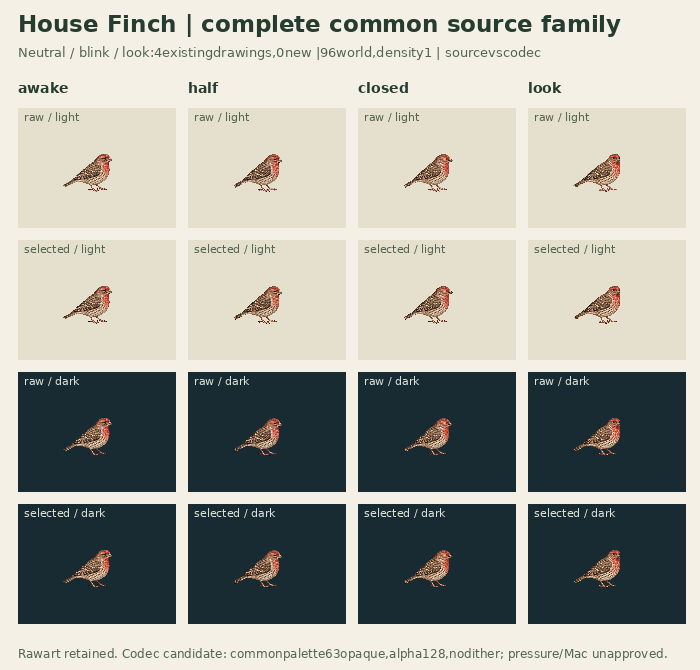
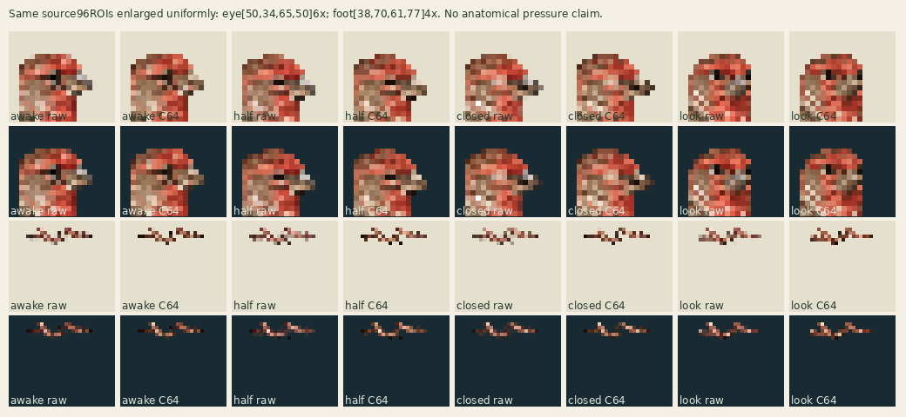

Three provisionally useful selected source actions,4existingdrawings,0new. Same adultmale family. Codec derivative passed actual pixel normalization; visualcandidate remains unreviewed.
Rawsource · light
Sharedpalette candidate · light
Rawsource · dark
Sharedpalette candidate · dark
Each bird uses its full96×96world canvas, density1, pivot48,75. No crop, fitting, translation or root/bodybob.
Selectedblink42/2/3/2/20ticks@30Hz retained (2.3s); half reused both sides. Look30/12/30 (2.4s). Sourceblinkloop remains declared; this comparison viewer plays ONE episode then holds finalawake until explicitreplay. Quietidle is selectedneutral’s42tick sameimagehold. No generated intermediates.


Shared63opaque colors+transparent, alpha128, no dither. Threshold drops soft fringes and promotes others; exactrawPNGs/sources retained. Contacts[]; geometryReviewedfalse; supportWorldnull. Image-region points are not accepted sole pressure or toe lock. Currentprimary/profile/bindings untouched. Fullruntime schema/admission, rights/fidelity and actualMacyard remain pending.
Canonical selection/source audit · Actual unchanged codec result · Partial field mapping